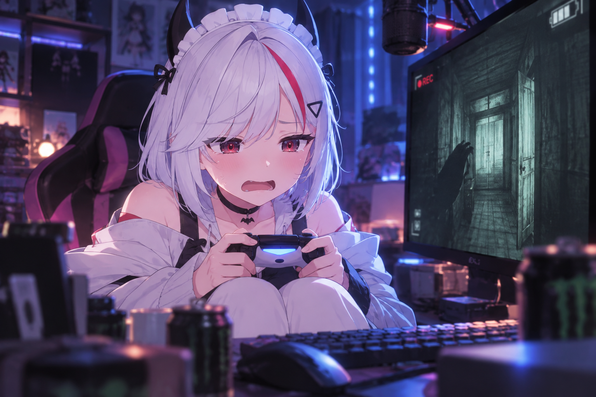

2026 · 10 · 02
첫 나뱅알
공포게임은 거의 ASMR처럼... 그리고 카페에서 만난 나노 😈

10.02 · 아웃라스트1 플레이 중인 나노 🎮
오늘은 초반 소통 후 아웃라스트1!
...이었는데
나는 거의 공포게임 ASMR 듣듯이 봐서 ㅋㅋㅋㅋㅋ
게임 내용은 많이 못 봤습니다...
그리고 아웃라스트가 끝난 뒤에는 카페 탐방!
내가 만들어 올린 이미지들도 나노가 봐줬는데
직접 봐주는 것도 좋았는데 댓글까지 남겨줘서 더 좋았음.
앞으로도 많은 이미지 기대 바란다는 느낌이던데...
오케이. 확인. 😈
앞으로도 나노랑 피코 예쁘고 귀여운 모습
열심히 만들어보겠습니다 ㅋㅋㅋ
첫 나뱅알은 짧게!
오늘도 방송 고생했어 나노 💜
나뱅알~!
오늘도 방송 고생했어 나노 💜
나뱅알~!